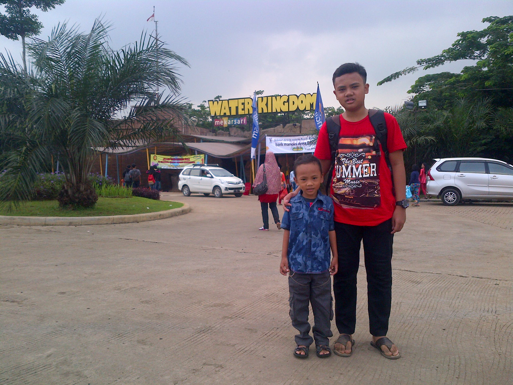

Syahriliandika Yuanindra
Masihsiswa
Bogor,Indonesia
syahriliandi63@smakbo.sch.id
0855-8540-688
Ability
Chemical
Sains
Math
Musical
Languages
Indonesia
English
All About Me
Aku lahir pada tanggal 22 Desember 2002 di Bogor. Aku tinggal dan besar di daerah Gunung Putri, Bogor.Aku tinggal bersama keluargaku. Aku merupakan anak pertama dari 2 bersaudara. Tanggal 22 Januari tahun ini aku sudah berumur 17 tahun, jadi tahun ini aku bisa mengikutipemilu presiden, mennurut kalian aku coblos yang mana hayooo???
My Brother

Aku menyukai banyak hal, dan tidak menyukai banyak hal juga. Aku juga sering mencoba hal baru. Seperti mengikuti program PSG yang baru pertama kali dilaksanakan tahun ini. Dengan begitu, aku bisa disebut sebagai pioneer of PSG. Aku menyukai musik. Siapa sih yang gak suka sama musik? Musik itu menggambarkan jiwa kita. Saat aku sedang down, biasanya aku akan mendengarkan musik dan jadi lebih tenang. My favourite genre are accoustic and pop. Aku juga dapat bermain gitar, tapi gak jago-jago amat Aku juga menyukai olahraga, seperti badminton, sepak bola, renang, dan voli. Tidak hanya soal fisik, di dalam kelas pun aku termasuk siswa yang bisa mengikuti pelajaran dengan baik. Aku juga tertarik dengan hal-hal mengenai astronomi, psikologi, dan sejarah.